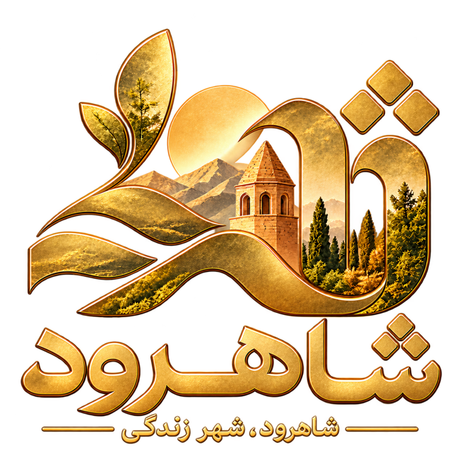

شاهرود، شهر زندگی
از چشمانداز تا اجرا
شروع کوچک و قابل سنجش.توسعه هر مرحله، وابسته به نتیجه مرحله قبل.
پیشنهاد آغاز: چند خدمت پرتکرار، یک یا دو محدوده شهریو یک مسیر پاسخگویی واقعی.
با اسکرول بین دنیاها سفر کنید یا یک مقصد را انتخاب کنید.
۱۸ بسته خدماتی + نظام اعتبار شهروندی · بر اساس پیشنهادنامه ارائهشده
این وبسایت، روایتی مفهومی از پیشنهادنامه جامع شهر هوشمند شاهرود است. نمایش مسیرها، شبکهها و عناصر سهبعدی، تصویرسازی توضیحی است و نقشه دقیق یا داده زنده شهر محسوب نمیشود. عکسها و تصویرسازیهای مفهومی در یک محیط سهبعدی نمایش داده شدهاند؛ صحنههای ترکیبی لزوماً عکس مستند مکان واقعی یا سامانه فعال شهرداری نیستند و تصاویر پانورامای ۳۶۰ نیستند.
۲۸ قاب گالری از ترکیب عکسهای اصلی پروژه، تصاویر مفهومی ارائهشده در گفتگو و المانهای گرافیکی اختصاصی ساخته شدهاند. تصویرسازیهای مفهومی را با عکس مستند شاهرود اشتباه نگیرید. تصاویر مشتقشده از عکسهای دارای مجوز اشتراک همانند، تابع همان مجوز هستند.
توسعه با Three.js و D3.js · قلم وزیرمتن · تصاویر Wikimedia Commons و تصاویر مفهومی ارائهشده توسط کاربر
پیشنهادنامه راهبردی و اجرایی شاهرود هوشمند، پاییز ۱۴۰۵؛ ۱۴ بخش و دو پیوست. قابلیتها، فازها و شروط اجرا از همین سند اقتباس شدهاند. این تجربه، سامانه عملیاتی شهرداری نیست.